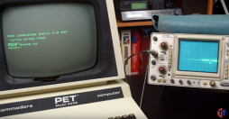
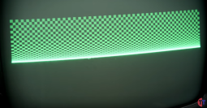
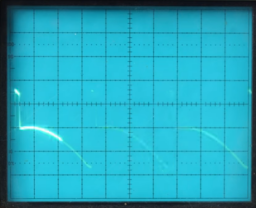
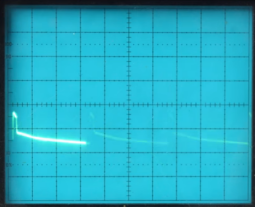

PET index - Killer Poke
(C) 1999-2020 André Fachat
The so-called Fast Print or Killer Poke has much been talked about. Wikipedia states it nicely:
"The PET-specific killer poke is connected to the architecture of that machine's video rasterizer circuits. In early model PETs, writing a certain value to the memory address of a certain I/O register ( POKE 59458,62 ) made the machine able to display text on the screen much faster. When the PET range was revamped with updated hardware, it was quickly discovered that performing the old trick on the new hardware led to disastrous behavior by the new video chip, causing it to destroy the PET's integrated CRT monitor."
So what it is? It is a Commodore BASIC Poke command that is supposed to be able to destroy a PET computer. There have been claims that it is not possible to destroy a PET by this poke. Personally I never tried it on a possibly vulnerable PET and I know of no confirmed death.
... so that was the beginning of the first version of this article I wrote a long time ago. In April 2020, however, Tech Tangents has, together with Adrian from Adrian's digital basement, and some discussion on the vintage computer forum, researched the killer poke even more. You can find the result of that research in this youtube video.
In this video, Tech Tangent shows the poke on an actually vulnerable PET, including scope screen shots of some signals. It is definitely worth a look!
In this video we see that the "fast print poke" as it was known, is not the "killer poke" it has often been named.
Below I will go into the history, the technical details and the results from the current research.
Note: Copyright for all images here by Tech Tangent / Adrian's digital basement
Table of content
1st gen - slow video RAM
The very first PET models (board #1) had very slow video RAM. Its access rate was the same as the rate of the main memory, 1 MHz. Therefore only the CPU or the video logic could access the video RAM at any one cycle, but not both. To achieve proper operation, the CPU always has priority over the video circuitry. When the video logic wants to read byte of video data when the CPU accesses the video RAM, it reads invalid data. This results in "snow" on the screen.
{kind=link}
Screen blank
To overcome the problem, Commdore did two things. First they used a special output line (CA2 of PIA1 at $E810 (59408)) that disabled the video output. It was also used as EOI output to the IEEE488 bus. On those PET models the screen blanked for a short period when the IEEE488 interface was used. Blanking the video with this line allowed to update the screen quickly, without provoking snow on the display. This feature was used by the kernal for scrolling, and by a few games to do some explosion effects.
You can see the blinking when the kernel switches off video during scrolling when Adrian shows a test program running on an old PET in the linked video (at around 9:00).
This feature has been removed in later models, and has nothing to do with the killer poke. In those later models this output only controls the IEEE488 EOI line.
According to Jim Butterfield's quote `"..screen snow and 'scroll-up flash' has been eliminated thanks to dynamic screen RAMs.." (quote by Jim Russo, The Transactor, May 1979)` it has been removed together with the introduction of the board#2 models. In those models the screen RAM is faster and allows 2 MHz access, video at Phi1 and CPU at Phi2.
Wait for retrace
The second feature was the vertical retrace input at VIA Port B ($e840, 59456), bit 5. In the kernal's print routine there is a loop that waits for this input to become low. Thus the video memory is only used by the CPU in the off-screen area. Of course it takes a lot of time to wait for the vertical retrace when the electron beam is at the beginning of the screen.
This is where the fast print poke comes in. The poke sets the VIA PB5 to low output. This way the kernal always thinks the electron beam is at the retrace (it always reads the output register value on port B for output pins, not the pin voltage level), and immediately prints to the screen. This is faster, but produces snow on the screen on the old PETs. The vertical retrace signal is generated by the video logic, that is discrete TTL in the old models (without the CRTC chip). It is also used as an interrupt input to generate the system interrupt (CB1, PIA1).
When the poke is used, it sets two signal outputs to compete with each other: the VIA PB5 output, and the 74LS08 that produces the "VIDEO ON" signal used to check whether the screen is currently being drawn. Obviously in most cases the 74LS08 chip won - because otherwise there would not be any system interrupt on PIA's CB1 input pin caused by a changing signal.
However, as can be seen in the linked video, there may be cases where the 74LS08 is too "weak" to hold against the 6522. In such a case no video interrupt would happen anymore, and the screen would just keep blank (as VIDEO ON also controls the video output).
CRTC using VSYNC
When the board #3 was released the introduction of the CRTC video chip changed the situation radically. Here the CRTC produces the VSync signal, that is active only at a part of the retrace. As there was no VIDEO ON signal from the CRTC, VSYNC was used to generate the system interrupt. As Commodore probably didn't want to break older programs that actually checked VIA PB5, they also used VSYNC on this pin.
VSYNC as used on VIA PB5, however, is directly connected to the actual analog video circuitry in the PET monitor. It seems that this change made the PET "vulnerable" to the Poke. A possible explanation, however, is quite technical and given in the next section.
To understand the nature of the problem one has to know a bit about digital and analog electronics. First of all, we cannot assume that what we are talking about is purely digital in the sense that all voltages are 0V or 5V, and none else. Secondly we have to look at the databooks of the components involved, the 6522 and several TTL ICs. I will mention the necessary detail when needed.
What I will describe below has solely been analyzed from the schematics of the different PET models. Later I have confirmed the voltage drop with an oscilloscope on my CBM 8296. Further analysis has been done by Tech Tangent and Adrian as mentioned.
The old PETs
The non-CRTC PET generate the retrace signal with the "master timing" electronics, where it was produced by a 74LS08 (C6 in the 2001 schematics on the CBM archive). This signal is also used in IC E9 (input to 74LS20) to blank the video signal on off-screen times. The signal itself, as I can see it, is not fed to the (analog) video (CRT i.e.) electronics. This means that the relevant input is a TTL input that recognizes everything above 2.4V as a logic 1.
In normal operation C6 produces the signal that is 5V for screen active and 0V for off-screen. The "speed" poke now is to set PB5 to a low output. However already in this case we have an unhealthy situation: The 74LS08 drives the line high and low according to the timing, but the VIA always pulls the line low. Obviously the 74LS08 wins, because otherwise the screen would be blank anyway (due to E9, 74LS20), but probably only because a TTL input recognizes even 2.4V only as a logic 1 (The datasheets say that the TTL output can source 0.4mA to pull a line high, and the VIA6522 can drain 1.6mA. This would mean that the 6522 can always drain the line to a low voltage level. Why does the 74LS20 then read a logic 1, i.e. more than 2.4V? The solution is that the 74LS08 sources 0.4mA in normal operation, but it can source up to 20-100mA under short circuit conditions. A 6522 draining up to 1.6mA can surely count as some kind of short circuit condition. For normal operation (< 0.4mA) it is guaranteed that the output voltage is around 5V. For short circuit conditions the voltage is less. As the TTL input (74LS20) still reads the logic 1, we can conclude that the TTL output still sources enough current to keep the voltage above 2.4V. We have to assume that sourcing 4 times the nominal current will lower the voltage considerably from 5V, though. I would be grateful if someone could measure those voltages with an oscilloscope to confirm that theory.)
The timing for the Cathode Ray Tube is still done by the master timing electronics, i.e. VSync and HSync signals are not influenced by the poke.
Possibly vulnerable PETs
{kind=link}
Screen and HSync with the poke
{kind=link}
Screen with the poke
{kind=link}
Original retrace
{kind=link}
Retrace with the poke
{kind=link}
When the video electronics was changed to use the CRTC chip, there was no more master timing electronics. So another way had to be found to generate the signal, esp. for the system interrupt. Therefore the CRTC VSync signal is used as a replacement signal. Again we have the same situation as above. One TTL output and a VIA 6522 driving the signal against each other. We will expect the same voltage drop as above.
This effect has in fact been observed - I have measured the VDRIVE pin of my 8296 with and without the poke. Without the poke I get a signal with an average voltage of about 4.7V to GND. With the poke, however, I get an average voltage of 1V to GND! The picture on my oscilloscope indeed shows that the voltage difference between the high level (display) and low level (retrace) with the poke reduces to about a fourth of the voltage without the poke!
In the CRTC PET the signal is not read by a TTL input, but is directly fed to the analog CRT electronics. The first input circuitry of the VSync signal seems to be the ramp generator.
The VDrive input of the early 8032 schematics (see 8032/321448.gif) expects 5V for onscreen and 0V for flyback. As long as the Vdrive input is (much?) higher than 1.93V a current is simply integrated to get the ramp voltage (for the vertical beam position, see oscilloscope point (4)) A diode (D602) lets the TTL output draw the charge of C601 and the ramp generator goes to 0 when the VSync input goes to 0 (see oscillscope picture (3) & (4)) The DC voltage at (4) is around 1.93V (so the schematics says).
Now apply the poke to set Via PB to low output. If the ramp goes above the voltage of the TTL level (that might be lower than 5V because the VIA draws it) the ramp just flattens off (which differs from my initial assumption). I don't say that the ramp is now steeper. I only say that the ramp might be stopped earlier. This effect is seen in Tech Tangent's video on his scope measurements.
The result of this seems to be that the video display shrinks vertically, and while about the upper half looks almost normal, the lower half is more and more compressed into a single horizontal line - what you would expect if the ramp responsible for vertical movement flattens off.
The effect did not happen on old PET, because the VIA was not connected to the VSync signal, but to the video signal generation, and thus restricted to the board itself.
Fixed PETs
Commodore seem to have been noticed of this behaviour and they changed the video electronics: Later (see 8032034.gif) the analog electronics has been replaced by an integrated circuit, a TDA 1170. This could probably handle the reduced Vsync voltage.
In fact I even tried the poke on my 8296 with connected screen. As a late model I assumed it has the fix, but kept my finger close to the reset button, though. As far as I can see from the screen the CRT now simply does not get any sync anymore, the screen just moves vertically.
What do we learn from this?
First, the fast print poke is not the killer poke it is assumed to be. Of course there still may be long-term effects of two output signals fighting each other, so the poke is not recommended anyway, even at the old machines it was written for.
Secondly, to protect the old hardware, a resistor from VIA PB5 to the signal, or even to ground could do the job. Look out for a video from Adrian's digial basement for that.
Thirdly, still not all is safe yet. Especially with the CRTC timing can be programmed very freely, and could still be put into such a mode that it could fry the screen electronics. For example the space invadors code shown in the last frames of the video jump into the PET's editor ROM, only to set the horizontal total number of characters to zero... it was expecting some part of the interrupt routine instead from the old PET. So keep your finger on the power switch when running unknown software.
Links
Return to Homepage
Last modified: 2020-05-02